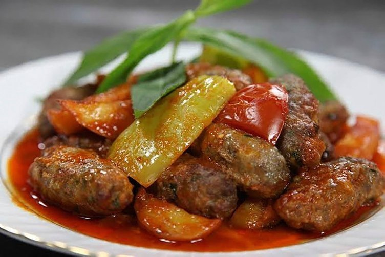

Altın Rotalar, her yörenin kendine özgü lezzetlerini keşfetmeniz için sizi benzersiz bir lezzet yolculuğuna çıkarıyor.
Anadolu’nun kadim mutfağından modern sokak tatlarına kadar uzanan bu bölümde, hem damak tadınıza hitap eden tarifleri hem de tadılması gereken yerel restoran önerilerini bulabilirsiniz.
Türkiye’nin zengin mutfak kültürünü yerinde keşfedin!
Hızlı erişim için aşağıdaki butonları kullanabilirsiniz.
Marmara Mutfağı
İskender Kebap: Bursa’nın Efsane Lezzeti
İskender Kebap, ince dilim döner etinin tereyağı, domates sosu ve yoğurtla buluştuğu, Türkiye’nin en meşhur kebaplarından biridir.
Adını yaratıcısı İskender Efendi’den alan bu özel lezzet, Bursa mutfağının gururu olarak hem yerli hem yabancı ziyaretçilerin favorisidir. Yanında sıcak pideyle servis edilen İskender, damakta unutulmaz bir tat bırakır.
Kabak Tatlısı: Trakya’nın Sade Lezzeti
Kabak Tatlısı, Trakya ve Marmara bölgesinin en sevilen geleneksel tatlılarından biridir. Kabaklar, şekerle ağır ağır pişirilir, üzerine ceviz serpilir ve bazen kaymakla servis edilir.
Hem hafif hem de doğal tatlarıyla özellikle kış aylarının vazgeçilmezi olan bu tatlı, sofralara hem renk hem de tat katar.
Kestaneli Pilav: Kışın En Özel Lezzeti
Kestaneli Pilav, Bursa ve Marmara bölgesinde özellikle kış aylarında yapılan, hem doyurucu hem de enfes aromasıyla dikkat çeken bir pilav türüdür.
Tane tane pirinçle birlikte haşlanmış kestaneler, tereyağı ve bazen kuş üzümüyle zenginleştirilir. Özel günlerin ve davet sofralarının vazgeçilmezi olan kestaneli pilav, hem görsel hem de lezzet açısından şölen sunar.
Ege Mutfağı

İzmir Köfte: Ege’nin Lezzet Dolu Klasik Yemeği
İzmir Köfte, yumuşak ve baharatlı köftelerin, domates sosuyla buluştuğu, fırında pişirilen nefis bir Ege yemeğidir.
Yanında genellikle pilav ve yoğurtla servis edilir. Hem pratik hem doyurucu olan bu geleneksel tat, Ege mutfağının en sevilen lezzetlerinden biridir.
Şevketi Bostan: Ege’nin Şifalı ve Lezzetli Ot Yemeği
Şevketi Bostan, etli ya da zeytinyağlı olarak hazırlanan, özel bir ot yemeğidir.
İzmir başta olmak üzere Ege’nin birçok yerinde bahar aylarında toplanan bu şifalı ot, kendine has aroması ve yumuşacık dokusuyla sofralara doğanın taptaze lezzetini taşır. Genellikle kuzu etiyle pişirilir ve limonla tatlandırılır.
Ayva Tatlısı: Ege Sofralarının Zarif ve Lezzetli Finali
Ayva Tatlısı, Ege mutfağının en zarif tatlılarından biridir. İçine ceviz konulan ayvalar, tarçınla tatlandırılmış şerbetle uzun süre kısık ateşte pişirilir.
Renkli görünümüyle iştah açan bu tatlı, özellikle özel davet sofralarının vazgeçilmezidir. Üzerine kaymak ya da dondurma eklenerek sunulduğunda lezzeti taçlanır.
Akdeniz Mutfağı
Mersin Tantunisi: Sokaktan Gelen Efsane Lezzet
İncecik doğranmış etin sacda pamuk gibi lavaşla buluştuğu Mersin Tantunisi, sadece bir yemek değil; Akdeniz’in sıcak ruhunu taşıyan bir kültürdür.
Bol baharatı, taze domatesi ve yanında mutlaka ayranla sunulan bu lezzet, Mersin sokaklarının vazgeçilmezidir. Ayakta hızlıca yenip enerji veren tantuni, hem doyurucu hem bağımlılık yapacak kadar lezzetlidir.
Kerebiç: Mersin’in Efsanevi Bayram Tatlısı
Kerebiç, Mersin mutfağının eşsiz tatlılarından biridir. Dışı irmik veya unla yapılan yumuşak bir kurabiye, içi ise ceviz ya da Antep fıstığı dolgusu ile zenginleştirilir.
Onu diğer tatlılardan ayıran asıl özelliği ise yanında sunulan beyaz, hafif köpük kıvamındaki özel çöven otu kremasıdır. Özellikle Ramazan ve bayram sofralarının vazgeçilmezi olan Kerebiç, hem geleneksel hem de görsel bir şölen sunar.
Batırık: Torosların Doğal Lezzeti
Batırık, Mersin ve çevresinde doğadan gelen tazelikle hazırlanan geleneksel bir yeşillik yemeğidir. Genellikle ıspanak, pazı gibi yeşilliklerin zeytinyağı, sarımsak ve yoğurtla buluştuğu bu hafif ve sağlıklı lezzet, hem kahvaltı sofralarının hem de hafif öğünlerin vazgeçilmezidir.
Doğallığı ve ferah tadıyla Batırık, Torosların özgün mutfağından gelen eşsiz bir armağandır.
İç Anadolu Mutfağı
Etli Ekmek: Konya’nın Meşhur İncecik Lezzeti
Etli Ekmek, İç Anadolu mutfağının ve özellikle Konya’nın en tanınmış yemeklerinden biridir. İncecik uzun bir hamurun üzerine, kıyma, soğan, domates ve biberle hazırlanan özel harç yayılır, taş fırında çıtır çıtır pişirilir.
Genellikle ayranla birlikte tüketilir. Hem doyurucu hem hafif olan bu lezzet, sadeliğiyle sofralarda kendine özgü bir yer edinmiştir. Konya’ya yolunuz düşerse, gerçek Etli Ekmek’i yerinde tatmadan dönmeyin!
Mantı: İç Anadolu’nun Minik Lezzet Bombası
Mantı, Kayseri başta olmak üzere İç Anadolu’nun en bilinen yemeklerinden biridir. İçine kıyma konan minik hamur bohçaları kaynar suda pişirilir, üzerine sarımsaklı yoğurt ve kızdırılmış salçalı sos dökülür.
Lezzetiyle sınırları aşan bu geleneksel yemek, emek isteyen ama yemesi büyük keyif veren bir Anadolu klasiğidir.
Höşmerim: İç Anadolu’nun Sütlü Tatlı Klasiği
Höşmerim, taze peynir, irmik ve şekerle yapılan, hafif yapısıyla öne çıkan geleneksel bir tatlıdır. Eskişehir ve çevresinde sıkça yapılır, bazı yörelerde un da eklenerek hazırlanır.
Sıcakken ya da ılık servis edilen bu tatlı, hem hafifliğiyle hem de özgün lezzetiyle sofralara tatlı bir dokunuş getirir.
Karadeniz Mutfağı
Hamsi Tava: Karadeniz’in Efsane Lezzeti
Taptaze hamsilerin mısır ununa bulanıp kızartılmasıyla yapılan Hamsi Tava, Karadeniz’in vazgeçilmez sokak lezzetidir.
Dışı çıtır, içi yumuşacık bu tat, özellikle balık sezonunda sofraları şenlendirir.
Kuymak: Tereyağı ve Peynirin Büyülü Uyumu
Kuymak, mısır unu, tereyağı ve yöresel peynirle hazırlanan, Karadeniz kahvaltılarının yıldızıdır.
Eriyen peyniri ve sıcak dokusuyla ekmek banarak yemenin keyfi tarif edilemez.
Hamsiköy Sütlacı: Trabzon’un Taş Fırın Tatlısı
Hamsiköy Sütlacı, odun ateşinde taş fırında pişirilir ve kremamsı yapısıyla ünlüdür.
Hafif yanık aroması ve üzerindeki tarçınla Karadeniz’in en sevilen sütlü tatlılarındandır.
Doğu Anadolu Mutfağı
Cağ Kebabı: Erzurum’un Ateşle Dansı
Odun ateşinde yavaşça pişirilen kuzu etinin ince ince dilimlenerek şişte servis edildiği Cağ Kebabı, Erzurum mutfağının gözbebeğidir.
Lavaşla birlikte sunulur, yanında soğan ve ayranla harika gider. Etin yumuşaklığı ve is kokusu lezzeti zirveye taşır.
Ispanak Borani: Erzincan’dan Sağlıklı Bir Sofra
Ispanak, nohut ve sarımsaklı yoğurtla buluşur, üzerine kızgın tereyağında nane gezdirilir.
Hem hafif hem besleyici olan bu yemek, Erzincan yöresinde özellikle kış sofralarının vazgeçilmezidir. Et yemeyenler için harika bir ana yemek alternatifi.
Saray Helvası: Doğu’nun Ağızda Dağılan Tatlısı
Un, tereyağı ve şekerin ustalıkla birleştiği bu gevrek helva, Doğu Anadolu’da özellikle bayramlarda ve misafir sofralarında ikram edilir.
Bol cevizli ya da sade olarak hazırlanabilir. Az malzemeyle yapılan ama çok şey anlatan bir lezzettir.
Güneydoğu Anadolu Mutfağı
Tas Kebabı: Güneydoğu'nun Doyurucu Et Klasiği
Yumuşacık kuşbaşı et, patates ve havuç gibi sebzelerle birlikte ağır ateşte pişirilir. Salçalı sosuyla harmanlanarak güveçte ya da tencerede sunulur.
Yanında pilavla servis edildiğinde mükemmel bir ana öğün olur.
Şiveydiz: Baharın Lezzetli Müjdecisi
Taze sarımsak, kuzu eti ve nohutla yapılan bu yöresel yemek, yoğurtla terbiye edilir. Hafif ekşi tadı, kızgın tereyağlı nane ile tamamlanır.
Gaziantep başta olmak üzere Güneydoğu’nun en özgün sebzeli-etli yemeklerinden biridir.
Hatay Künefesi: Peynirin Şerbetle Buluştuğu Sıcak Tatlı
İncecik tel kadayıf arasına tuzsuz peynir konularak tavada pişirilen künefe, şerbetle buluştuğunda sıcak ve çıtır bir lezzete dönüşür.
Üzeri genellikle toz Antep fıstığıyla süslenir. Hatay mutfağının en meşhur tatlısıdır.
Sadece Bir Yemek Değil, Bir Kültür
Ülkemiz Türkiye, binlerce yıllık tarihinin, farklı medeniyetlerin ve çeşitli coğrafyaların izlerini taşıyan eşsiz bir mutfak kültürüne sahiptir. Her bölge, kendine has tatlar, malzemeler ve pişirme teknikleriyle bu zenginliğe katkı sunar.
Bu köklü miras, sadece sofralarımızı değil, kültürel kimliğimizi de yansıtır.
Çünkü bizde yemek, yalnızca beslenmek değil; birlikte olmak, paylaşmak ve yaşatmaktır.